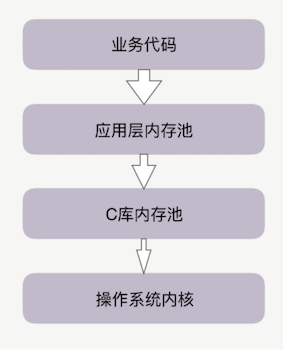
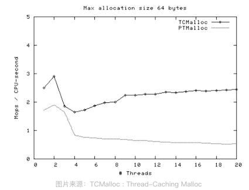

第二节 内存池提升内存分配的效率
在 Linux 系统中，用 Xmx 设置 JVM 的最大堆内存为 8GB，但在近百个并发线程下，观察到 Java 进程占用了 14GB 的内存。为什么会这样呢？
这是因为，绝大部分高级语言都是用 C 语言编写的，包括 Java，申请内存必须经过 C 库，而 C 库通过预分配更大的空间作为内存池，来加快后续申请内存的速度。这样，预分配的 6GB 的 C 库内存池就与 JVM 中预分配的 8G 内存池叠加在一起，造成了 Java 进程的内存占用超出了预期。
掌握内存池的特性，既可以避免写程序时内存占用过大，导致服务器性能下降或者进程 OOM（Out Of Memory，内存溢出）被系统杀死，还可以加快内存分配的速度。
在系统空闲时申请内存花费不了多少时间，但是对于分布式环境下繁忙的多线程服务，获取内存的时间会上升几十倍。
另一方面，内存池是非常底层的技术，可以更换适合应用场景的内存池。
在多种编程语言共存的分布式系统中，内存池有很广泛的应用，优化内存池带来的任何微小的性能提升，都将被分布式集群巨大的主机规模放大，从而带来整体上非常可观的收益。
1、隐藏的内存池
1-1 额外的内存开销从何而来
业务代码与系统内核间，往往有两层内存池容易被忽略，尤其是其中的 C 库内存池。
当代码申请内存时，首先会到达应用层内存池，如果应用层内存池有足够的可用内存，就会直接返回给业务代码，否则，它会向更底层的 C 库内存池申请内存。
比如，如果你在 Apache、Nginx 等服务之上做模块开发，这些服务中就有独立的内存池。
当然，Java 中也有内存池，当通过启动参数 Xmx 指定 JVM 的堆内存为 8GB 时，就设定了 JVM 堆内存池的大小。
Google 的 TCMalloc 和 FaceBook 的 JEMalloc，它们也是 C 库内存池。当 C 库内存池无法满足内存申请时，才会向操作系统内核申请分配内存。如下图所示：

Java 已经有了应用层内存池，为什么还会受到 C 库内存池的影响呢？
这是因为，除了 JVM 负责管理的堆内存外，Java 还拥有一些堆外内存，由于它不使用 JVM 的垃圾回收机制，所以更稳定、持久，处理 IO 的速度也更快。这些堆外内存就会由 C 库内存池负责分配，这是 Java 受到 C 库内存池影响的原因。
其实不只是 Java，几乎所有程序都在使用 C 库内存池分配出的内存。
C 库内存池影响着系统下依赖它的所有进程。以 Linux 系统的默认 C 库内存池 Ptmalloc2 来具体分析，看看它到底对性能发挥着怎样的作用。
C 库内存池工作时，会预分配比你申请的字节数更大的空间作为内存池。比如说，当主进程下申请 1 字节的内存时，Ptmalloc2 会预分配 132K 字节的内存（Ptmalloc2 中叫 Main Arena），应用代码再申请内存时，会从这已经申请到的 132KB 中继续分配。
# cat /proc/2891/maps | grep heap
01643000-01664000 rw-p 00000000 00:00 0 [heap]
当我们释放这 1 字节时，Ptmalloc2 也不会把内存归还给操作系统。
Ptmalloc2 认为，与其把这 1 字节释放给操作系统，不如先缓存着放进内存池里，仍然当作用户态内存留下来，进程再次申请 1 字节的内存时就可以直接复用，这样速度快了很多。
132KB 不多呀？为什么这一讲开头提到的 Java 进程，会被分配了几个 GB 的内存池呢？这是因为多线程与单线程的预分配策略并不相同。
每个子线程预分配的内存是 64MB（Ptmalloc2 中被称为 Thread Arena，32 位系统下为 1MB，64 位系统下为 64MB）。
如果有 100 个线程，就将有 6GB 的内存都会被内存池占用。当然，并不是设置了 1000 个线程，就会预分配 60GB 的内存，子线程内存池最多只能到 8 倍的 CPU 核数，比如在 32 核的服务器上，最多只会有 256 个子线程内存池，但这也非常夸张了，16GB（64MB * 256 = 16GB）的内存将一直被 Ptmalloc2 占用。
Linux 下的 JVM 编译时默认使用了 Ptmalloc2 内存池，因此每个线程都预分配了 64MB 的内存，这造成含有上百个 Java 线程的 JVM 多使用了 6GB 的内存。在多数情况下，这些预分配出来的内存池，可以提升后续内存分配的性能。
1-2 解决Ptmalloc2多内存开销的问题
然而，Java 中的 JVM 内存池已经管理了绝大部分内存，确实不能接受莫名多出来 6GB 的内存，那该怎么办呢？
既然我们知道了 Ptmalloc2 内存池的存在，就有两种解决办法。
首先可以调整 Ptmalloc2 的工作方式。
通过设置 MALLOC_ARENA_MAX 环境变量，可以限制线程内存池的最大数量，当然，线程内存池的数量减少后，会影响 Ptmalloc2 分配内存的速度。不过由于 Java 主要使用 JVM 内存池来管理对象，这点影响并不重要。
其次可以更换掉 Ptmalloc2 内存池，选择一个预分配内存更少的内存池，比如 Google 的 TCMalloc。
这并不是说 Google 出品的 TCMalloc 性能更好，而是在特定的场景中的选择不同。而且，盲目地选择 TCMalloc 很可能会降低性能，否则 Linux 系统早把默认的内存池改为 TCMalloc 了。
2、选择 Ptmalloc2 还是 TCMalloc？
2-1 TCMalloc 适用的场景
它对多线程下小内存的分配特别友好。
比如，在 2GHz 的 CPU 上分配、释放 256K 字节的内存，Ptmalloc2 耗时 32 纳秒，而 TCMalloc 仅耗时 10 纳秒。差距超过了 3 倍，为什么呢？
这是因为，Ptmalloc2 假定，如果线程 A 申请并释放了的内存，线程 B 可能也会申请类似的内存，所以它允许内存池在线程间复用以提升性能。
因此，每次分配内存，Ptmalloc2 一定要加锁，才能解决共享资源的互斥问题。然而，加锁的消耗并不小。如果你监控分配速度的话，会发现单线程服务调整为 100 个线程，Ptmalloc2 申请内存的速度会变慢 10 倍。TCMalloc 针对小内存做了很多优化，每个线程独立分配内存，无须加锁，所以速度更快！
而且，线程数越多，Ptmalloc2 出现锁竞争的概率就越高。比如我们用 40 个线程做同样的测试，TCMalloc 只是从 10 纳秒上升到 25 纳秒，只增长了 1.5 倍，而 Ptmalloc2 则从 32 纳秒上升到 137 纳秒，增长了 3 倍以上。
线程数越多，二者的速度差距越大。所以，当应用场景涉及大量的并发线程时，换成 TCMalloc 库也更有优势！

2-2 Ptmalloc2 适用的场景
为什么 GlibC 不把默认的 Ptmalloc2 内存池换成 TCMalloc 呢？因为 Ptmalloc2 更擅长大内存的分配。
比如，单线程下分配 257K 字节的内存，Ptmalloc2 的耗时不变仍然是 32 纳秒，但 TCMalloc 就由 10 纳秒上升到 64 纳秒，增长了 5 倍以上！现在 TCMalloc 反过来比 Ptmalloc2 慢了 1 倍！这是因为 TCMalloc 特意针对小内存做了优化。
2-3 多少字节叫小内存呢？
TCMalloc 把内存分为 3 个档次，小于等于 256KB 的称为小内存，从 256KB 到 1M 称为中等内存，大于 1MB 的叫做大内存。
TCMalloc 对中等内存、大内存的分配速度很慢，比如我们用单线程分配 2M 的内存，Ptmalloc2 耗时仍然稳定在 32 纳秒，但 TCMalloc 已经上升到 86 纳秒，增长了 7 倍以上。
所以，如果主要分配 256KB 以下的内存，特别是在多线程环境下，应当选择 TCMalloc；否则应使用 Ptmalloc2，它的通用性更好。
3、从堆还是栈上分配内存？
3-1 堆和栈内存是如何分配的
如果你使用的是静态类型语言，那么，不使用 new 关键字分配的对象大都是在栈中的。比如：
C/C++/Java语言：int a = 10;
否则，通过 new 或者 malloc 关键字分配的对象则是在堆中的：
C语言：int * a = (int*) malloc(sizeof(int));
C++语言：int * a = new int;
Java语言：int a = new Integer(10);
另外，对于动态类型语言，无论是否使用 new 关键字，内存都是从堆中分配的。
3-2 从栈中分配内存会更快
由于每个线程都有独立的栈，所以分配内存时不需要加锁保护，而且栈上对象的尺寸在编译阶段就已经写入可执行文件了，执行效率更高！
性能至上的 Golang 语言就是按照这个逻辑设计的，即使你用 new 关键字分配了堆内存，但编译器如果认为在栈中分配不影响功能语义时，会自动改为在栈中分配。
3-3 在栈中分配内存缺点
- 一 栈内存生命周期有限，它会随着函数调用结束后自动释放，在堆中分配的内存，并不随着分配时所在函数调用的结束而释放，它的生命周期足够使用。
- 二 栈的容量有限，如 CentOS 7 中是 8MB 字节，如果你申请的内存超过限制会造成栈溢出错误（比如，递归函数调用很容易造成这种问题），而堆则没有容量限制。
所以，当我们分配内存时，如果在满足功能的情况下，可以在栈中分配的话，就选择栈。
4、本节小结
进程申请内存的速度，以及总内存空间都受到内存池的影响。
隐藏着的 C 库内存池，对进程的内存开销有很大的影响。当进程的占用空间超出预期时，你需要清楚你正在使用的是什么内存池，它对每个线程预分配了多大的空间。
不同的 C 库内存池，都有它们最适合的应用场景，例如 TCMalloc 对多线程下的小内存分配特别友好，而 Ptmalloc2 则对各类尺寸的内存申请都有稳定的表现，更加通用。
- 内存池管理着堆内存，它的分配速度比不上在栈中分配内存。只是栈中分配的内存受到生命周期和容量大小的限制，应用场景更为有限。
- 然而，如果有可能的话，尽量在栈中分配内存，它比内存池中的堆内存分配速度快很多！
Google 的 TCMalloc 和 FaceBook 的 JEMalloc，它们也是 C 库内存池。当 C 库内存池无法满足内存申请时，才会向操作系统内核申请分配内存。如下图所示：
TCMalloc 对中等内存、大内存的分配速度很慢，比如我们用单线程分配 2M 的内存，Ptmalloc2 耗时仍然稳定在 32 纳秒，但 TCMalloc 已经上升到 86 纳秒，增长了 7 倍以上。
所以，如果主要分配 256KB 以下的内存，特别是在多线程环境下，应当选择 TCMalloc；否则应使用 Ptmalloc2，它的通用性更好。
- 如果你使用的是静态类型语言，那么，不使用 new 关键字分配的对象大都是在栈中的
- 通过 new 或者 malloc 关键字分配的对象则是在堆中的
- 另外，对于动态类型语言，无论是否使用 new 关键字，内存都是从堆中分配的。
为什么从栈中分配内存会更快。由于每个线程都有独立的栈，所以分配内存时不需要加锁保护，而且栈上对象的尺寸在编译阶段就已经写入可执行文件了，执行效率更高！
所以，当我们分配内存时，如果在满足功能的情况下，可以在栈中分配的话，就选择栈。